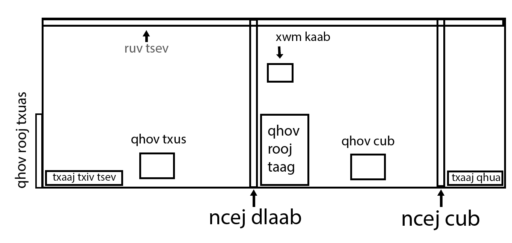
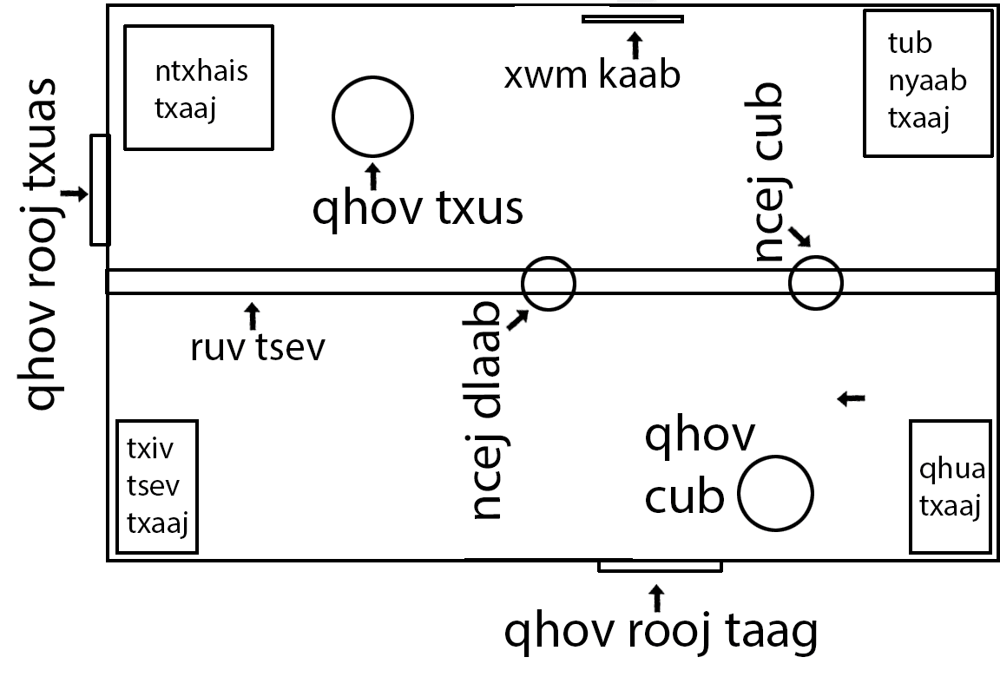

Title
Traditional House structure
Many of our current rituals and practices are based on how our home in our native land was structures. For example how we set the table when we have a feastive event. Or how the body of a deceased is place during a funeral. Here is a drawing of that structure.
Notes ... qhov txus is equivalent to our current house fireplace.
qhov cub is equivalent to the stove or kitchen.
both were used for cooking, the qhov txus is where the main dishes were prepared over a large fire.
The front door is the qhov rooj taag, and is the primary entrance. Visitors Qhua only use the front door. The side door qhov rooj txuas is used for going to to feed the animals and similar tasks.
Traditional Hmong home

Front view

Top view
